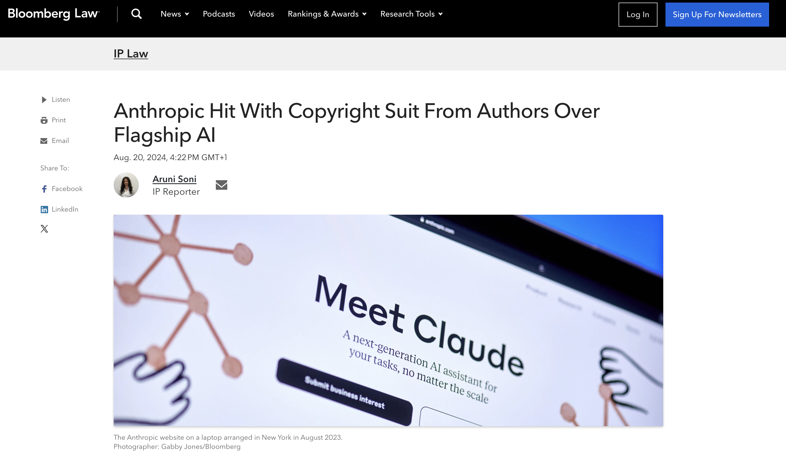
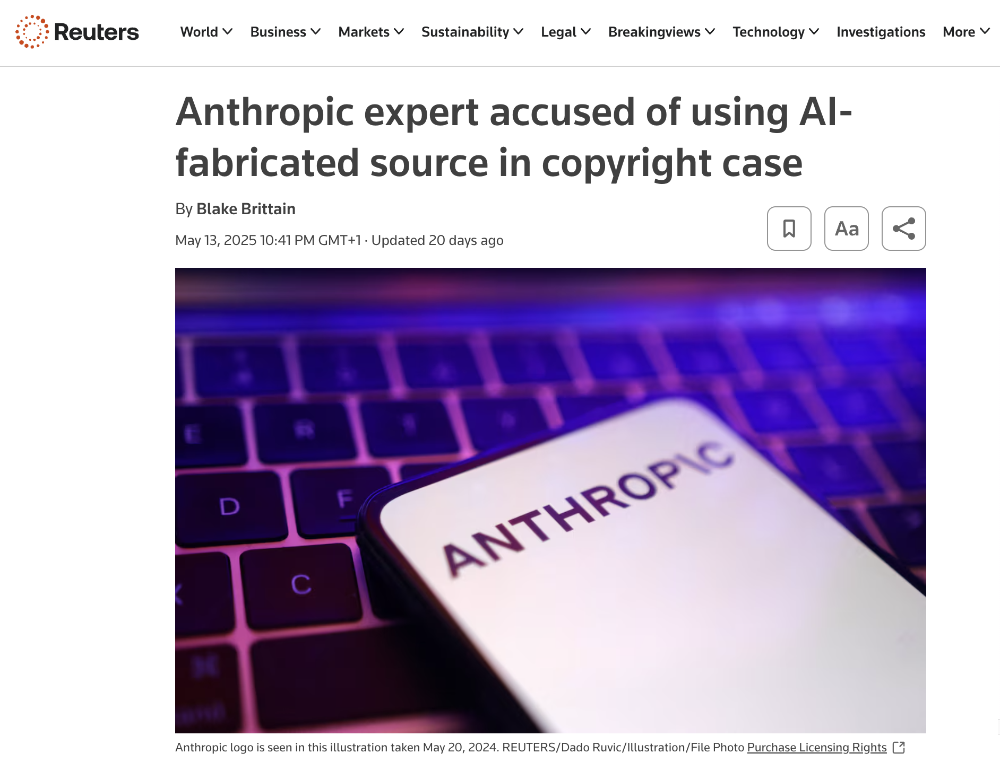
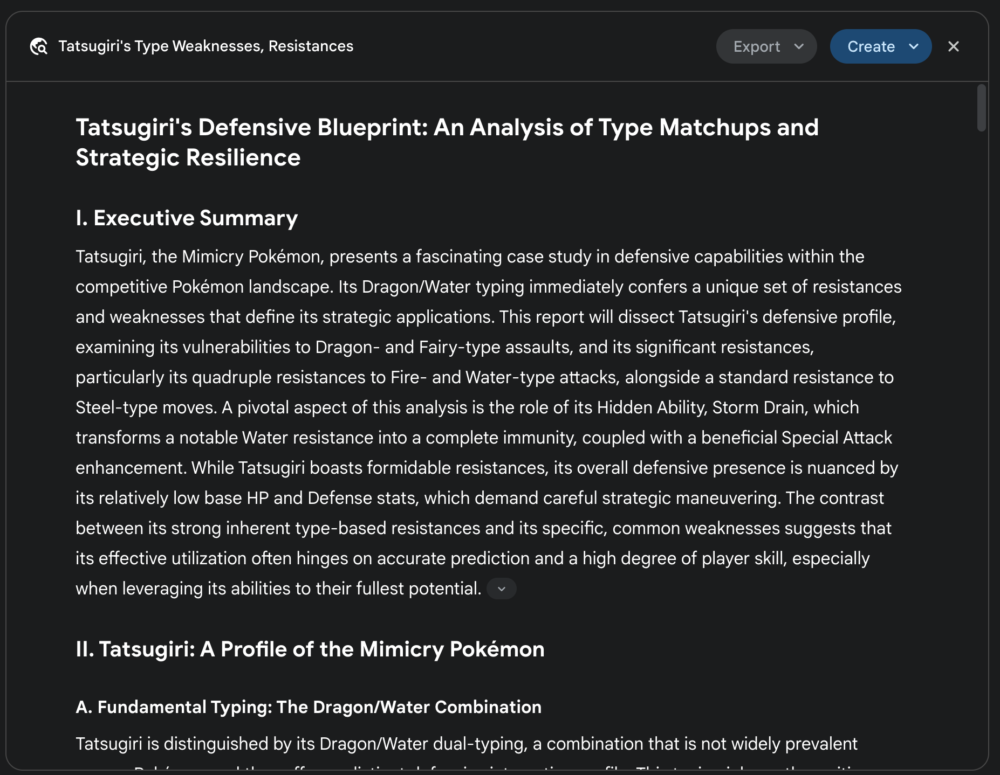
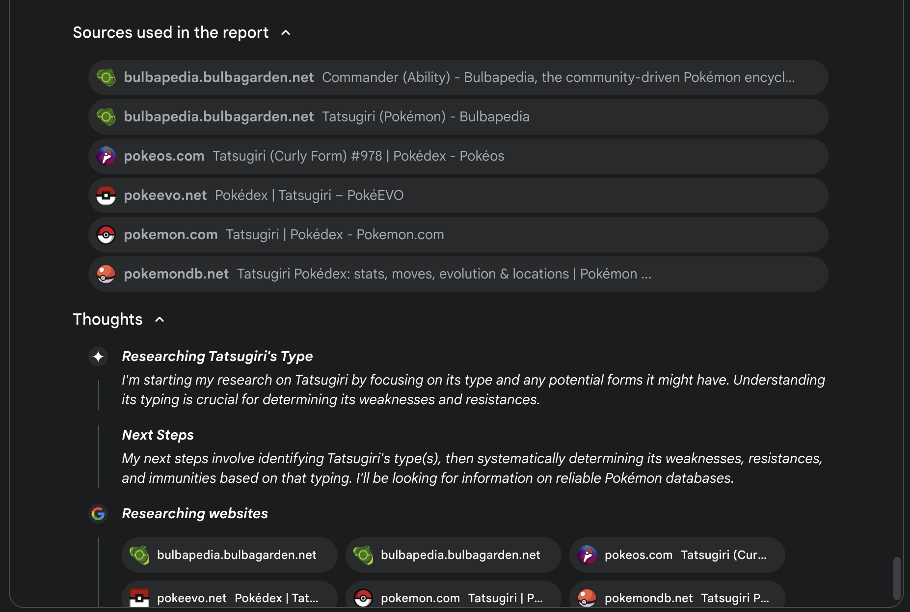
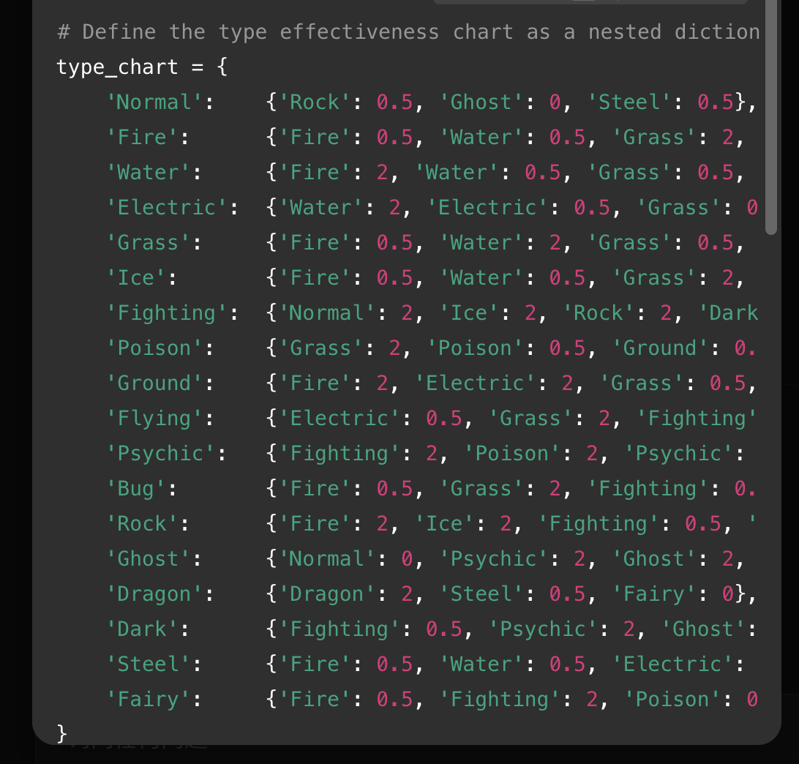
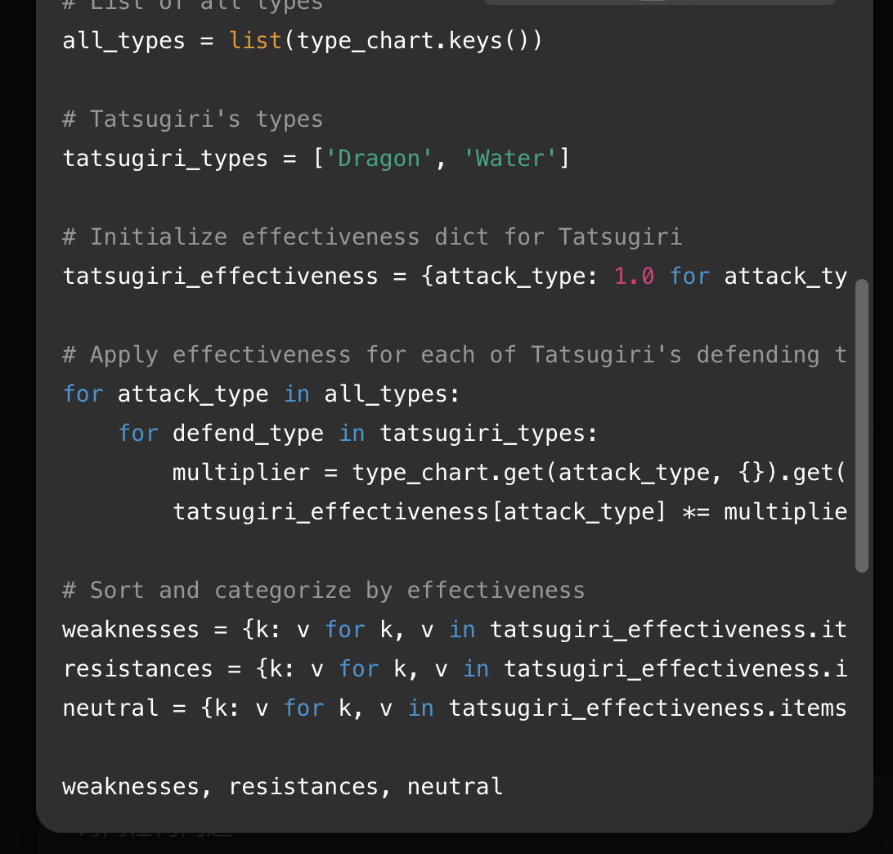
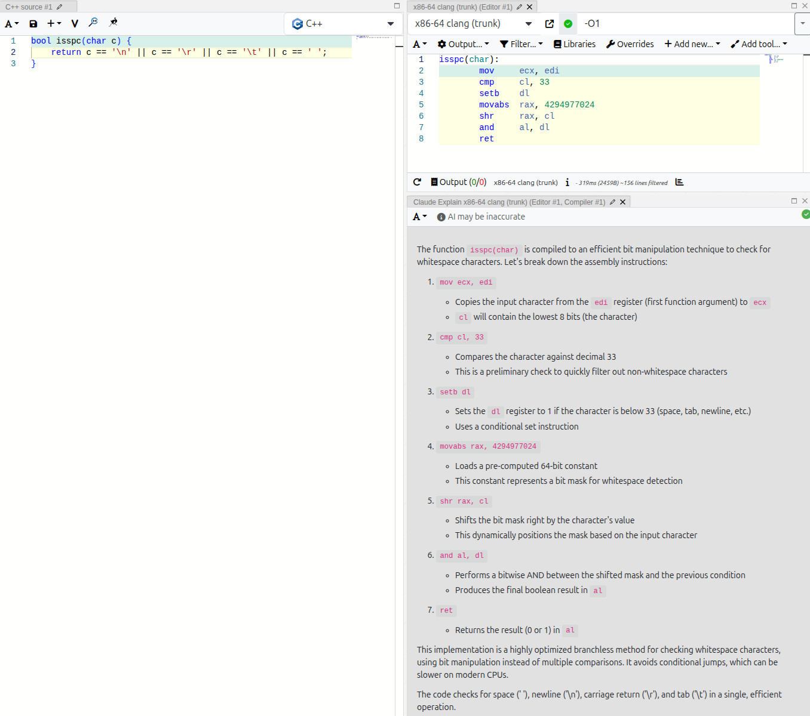

Matt Godbolt at ACCU

Compiler Explorer
1M+ Weekly C++ Compilations

Start With Why

So in summary...
So in summary...
- A spectrum emulator (What)
- built with 'modern' C++ (How)
- to learn and to play retro games üéÆ (Why)
Mental model of constexpr
"The constexpr specifier declares that it is possible to evaluate the value of the entities at compile time."
— cppreference
Why constexpr
- it provides a potential trade-off between runtime and compile-time
- turns algorithmic logic into data at compile-time
- (if used appropriately...)
Thank you!
Bonus? ü§î
Three boring points
- AI could be wrong without human awareness
- Recent AI progress makes results better
- AI application is still controversial

Debug
Human: "What are the standard Pokemon types?"
Assistant: "There are 18 Pokemon types: Normal, Fire, Water, Grass, Electric, Ice, Fighting, Poison, Ground, Flying, Psychic, Bug, Rock, Steel, Fairy, Dragon, and Dark." Ghost
Human: "What is Water weak to?"
Assistant: "Water is weak to Fire, Electric, and Grass."
Human: "And does it have any resistances?"
Assistant: "Water is resistant to Ice and Steel." Fire, Water
Could be worse in reality

Could be worse in reality

More pokemon experiments

Solution(s)
- Pay for GPT pro ❌
- Use search/deep research ✅ (basically works)
- Use Python tool ✅
Deep research

Deep research

Agent using code tool

Agent using code tool

Why AI relevant with this Spectrum talk?
Matt's timeline
- 4/3 9am: Listen to Daisy's ACCU talk
- 4/3 night: Use Claude Code to implement memory heatmap visualizer for emulator
- 4/4: ACCU Ending keynote talk
- Apr-May: Experiement with AI/LLM
- 5/23: AI assembly explanation tool to beta
Agent using code tool

Community feedback
ü§î
üòê
üòÖ
Thoughts (from Matt's blog)
- Human also makes mistakes
- Concern from community matters
- Will move forward though, as opt-in tool
- For some users 'could make the intimidating world of assembly code a little more approachable'
That's all, really!
References
- Matt Godbolt ACCU 2025: Teaching an old dog new tricks
- Matt Godbolt specbolt: Yet another ZX Spectrum Emulator
- Matt Godbolt blog: On AI, Assembly, and the Art of Project Stewardship
- Jason Turner C++ Weekly 233: std::map vs constexpr map